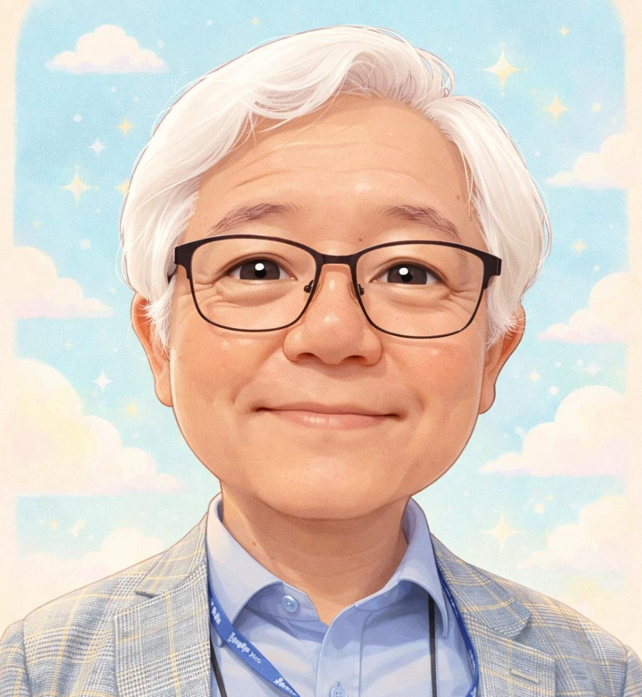

데미스 허사비스 (Demis Hassabis)
체스 신동 · 게임 개발자 · 인지신경과학 박사 · 2024 노벨화학상
딥마인드를 창업해 2014년 구글 인수를 이끌었고, 2016년 서울 알파고 대국과 알파폴드(노벨화학상)를 거쳐 현재 Google DeepMind를 총괄합니다.
상세 프로필 보기 →
등장인물 13인의 성장 배경과 결정적 역할 (개별 상세 페이지)
이야기 속에 등장하는 주요 창업자, 경영자, 과학자들을 인물별 독립 페이지로 정리했습니다. 각 카드를 클릭하면 성장 배경, 결정적 일화, 그리고 2026년 최신 행보까지 한눈에 읽을 수 있습니다.
체스 신동 · 게임 개발자 · 인지신경과학 박사 · 2024 노벨화학상
딥마인드를 창업해 2014년 구글 인수를 이끌었고, 2016년 서울 알파고 대국과 알파폴드(노벨화학상)를 거쳐 현재 Google DeepMind를 총괄합니다.
상세 프로필 보기 →구글 검색 엔진 발명 · 2014 딥마인드 인수 승인
2015년 7월 머스크의 생일 파티에서 AI 안전 논쟁을 일축하며, 결과적으로 머스크가 OpenAI를 설립하게 만드는 결정적 계기를 제공했습니다.
상세 프로필 보기 →2015 OpenAI 공동 창립 · 2018 이탈 · 2023 xAI 창업
구글의 AI 독점을 견제하기 위해 OpenAI를 출범시켰으나, 지배구조 갈등으로 2018년 떠난 뒤 2023년 독자 AI 기업 xAI를 세웠습니다.
상세 프로필 보기 →스탠퍼드 중퇴 · Y Combinator 대표 출신 투자자·경영자
직접 코드를 짜는 과학자가 아닌 전략가로서 2019년 영리 자회사 전환과 MS 10억 달러 투자를 성사시키며 ChatGPT 시대를 열었습니다.
상세 프로필 보기 →제프리 힌턴 제자 · AlexNet · GPT-1~3 지휘 · 2024 SSI 창업
트랜스포머의 잠재력을 즉시 간파해 GPT 시리즈를 이끌었고, 2024년 퇴사해 안전한 초지능 연구소(SSI)를 세웠습니다.
상세 프로필 보기 →Stripe 초대 CTO 출신 · 슈퍼컴퓨터 인프라 구축
자신의 아파트를 첫 사무실로 내주며 합류해, 수만 대의 GPU를 묶어 거대 AI를 학습시키는 엔지니어링 토대를 세웠습니다.
상세 프로필 보기 →바이브코딩(2025) · Agentic Engineering(2026.02) · Autoresearch
CS231n과 테슬라 자율주행을 거쳐 2025년 바이브코딩을 창시했고, 2026년 5월 경쟁사 Anthropic 사전학습팀에 전격 합류했습니다.
상세 프로필 보기 →PPO 알고리즘 · ChatGPT RLHF 설계자
강화학습의 표준 PPO와 인간 피드백 기반 강화학습(RLHF)을 주도해 GPT-3.5를 대화형 ChatGPT로 탈바꿈시켰습니다.
상세 프로필 보기 →로봇 손 강화학습 · 코딩 AI(Codex) 연구 그룹 총괄
초기 물리적 로봇 제어 연구에 이어 훗날 GitHub Copilot의 모태가 된 코딩 전문 AI 'Codex' 팀을 이끌었습니다.
상세 프로필 보기 →초기 OpenAI 11인 드림팀의 토대를 놓은 4인
로봇 공학, 분산 인프라, 생성모델 수학(Adam·VAE), 연구 운영을 분담해 초기 OpenAI 생태계를 완성했습니다.
상세 프로필 보기 →2017년 「Attention Is All You Need」 논문 주역
기존 순차 처리(RNN)를 버리고 병렬 어텐션만으로 문맥을 이해하는 트랜스포머 구조를 발표해 현대 AI 혁명의 문을 열었습니다.
상세 프로필 보기 →GPT-3 총괄 후 2021 Anthropic 창업 · 헌법적 AI와 Claude
의학·과학 발전의 사명감과 안전 철학이 충돌하자 OpenAI를 나와 '헌법적 AI'에 기반한 클로드(Claude)를 탄생시켰습니다.
상세 프로필 보기 →퀀트 펀드 GPU → 딥시크 창업 → 증류에서 독자 MoE·오픈소스 전환
반도체 규제 속에서 1단계 지식 증류로 세계를 놀라게 한 뒤, 2단계 MoE 초고효율화·독자 강화학습·오픈소스 개방으로 진화했습니다.
상세 프로필 보기 →